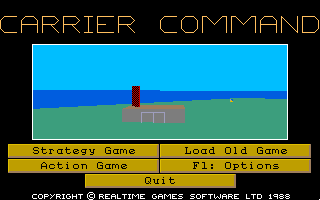
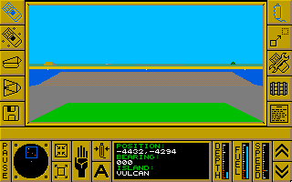

名稱：終極航艦／航母司令部／航空母艦指揮官 (Carrier Command，英文版)
簡介：Realtime 1988年出品的即時戰術遊戲，由Rainbird代理發行，台灣由超電磁科技代理
進口 [待補]。


保護：手冊密碼，破解碼：
CARRIER.EXE
E8 43 00 BE 94
EB 3E -- -- --
備註：若要滑鼠有作用，須按F1到Options，按F2到Input device，然後選3滑鼠。